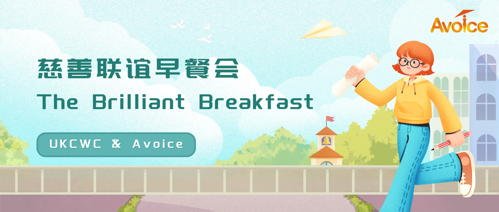
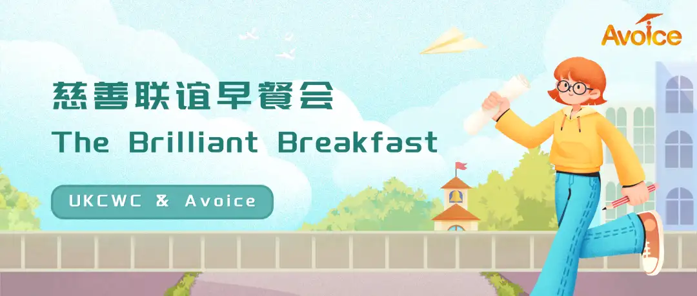
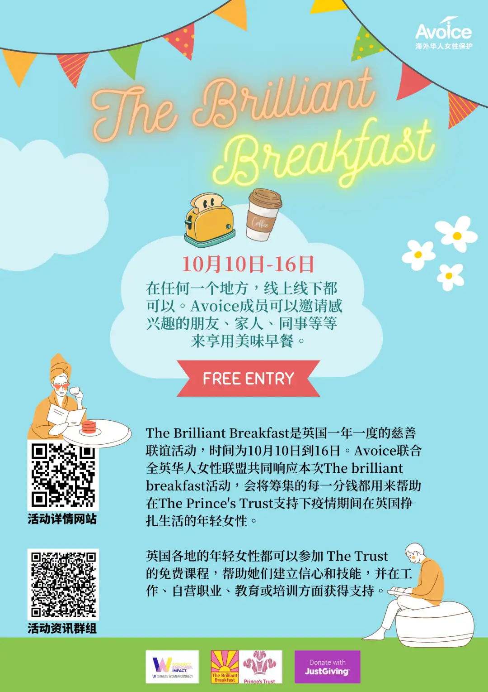
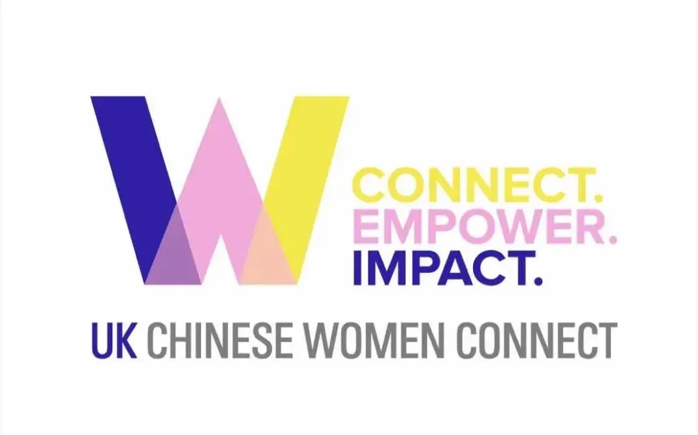

Avoice的成员及各地伙伴活动咨询
请扫下方二维码进群报名
本次活动Avoice合作伙伴

英国华人女性联盟介绍
UKCWC英国华人女性联盟是成立于英国的慈善机构（注册号：1193654）目标是将华人社区的女性团结在一起，减少孤立感和孤独感，实现种族和谐。
全英华人女性联盟在剑桥和伦敦组织的线下早餐会入口传送门请点击

Avoice是海外华人女性保护项目（Against Violence to Overseas Chinese Women Program）。致力于消除性别暴力、促进性别平等，为面临家暴威胁的海外华侨华人女性提供充分、持续的保护和救助。项目通过与政府部门、海外华人组织、社会组织、行业专家等建立合作网络，联合更广泛的青年公益力量，倡导公众对海外华人女性生活困境的关注和支持，为她们创造安全、平等的生存和发展环境，帮助她们从家庭暴力的受害者，成长为推动性别平等与保护弱势群体的倡导者和实践者。
文案&审核｜D.oris
海报制作｜Esther
推文排版 ｜Dai